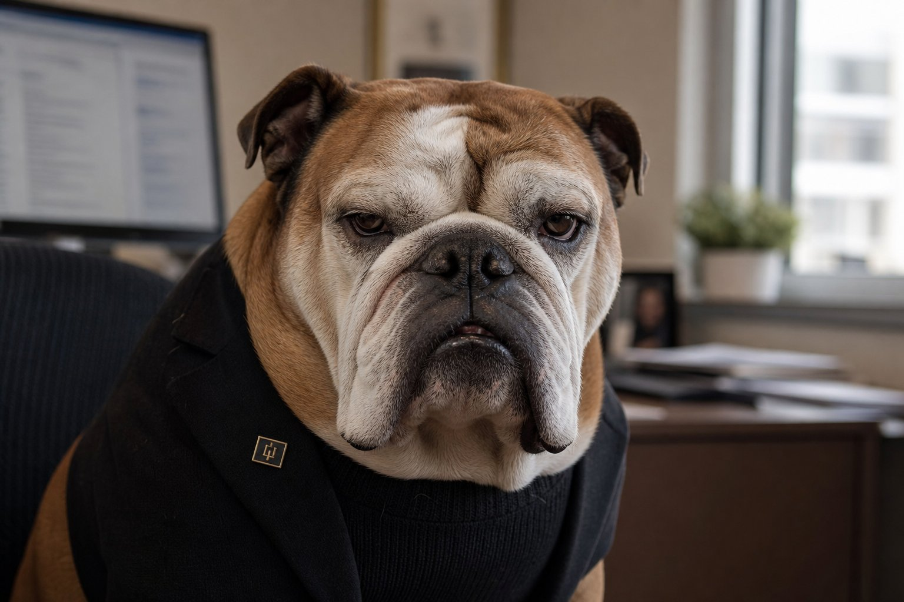
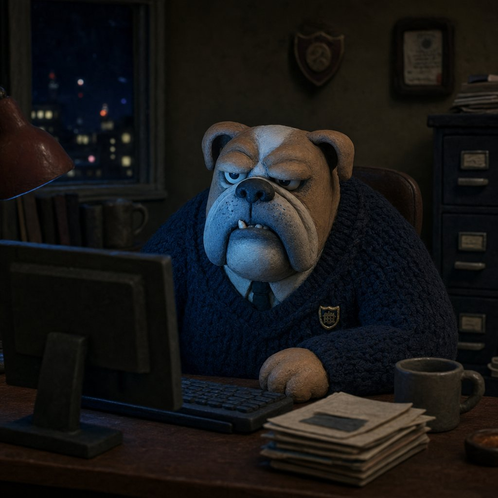
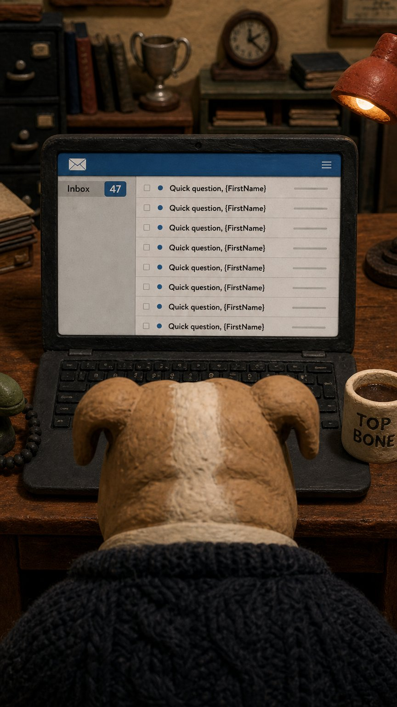

Four documents, one program
Each document builds on the last: who the character is, why the strategy works, how the look was chosen, and what's already built.

Project One-Pager
Who Charlie is: identity, personality and voice, wardrobe and world, tonal guardrails, the ten style renders, content pillars, and the rollout plan.

Viral-Mechanics Analysis
The web-verified evidence base: why brand-adjacent characters work, case-study teardowns (Duolingo to Nutter Butter), the 2026 meme landscape, X and LinkedIn playbooks, risks, and measurement.

Style Decision
How the clay canon was locked: matched head-to-head test renders, a five-lens judge panel, the unanimous verdict, the honest dissent, and the character codes every render must carry.

Pre-Production Pack
Everything built for launch: the reference set, the reaction pack, LinkedIn-native strips, memos and the PDF carousel, and eight storyboarded video shorts with i2v-ready keyframes.
The character
Charlie is the Larry David of marketing dogs — a senior English bulldog, CMO Emeritus, 90% silent. He never sells and never names the product. His job is reacting, with maximum weariness, to an industry that has genuinely earned the reaction. The look is a hand-built stop-motion clay world: thumbprint texture, miniature sets, practical light.
- Tan head, white blaze, graying jowls — always heavy-lidded eyes
- Navy cable-knit sweater · white collar · dark tie · one gold shield-crest pin
- Office worlds only; locked-off cameras at his eye level
- No readable in-scene text unless it IS the joke
- Punches at systems and genres — never at people
{kind=link}
{kind=link}
{kind=link}
{kind=link}
Key decisions on the record
| Decision | The call | Where it's argued |
|---|---|---|
| Brand posture | Strictly brand-adjacent: Charlie never names or sells the product. Evidence-based, not timidity — brand prominence measurably kills sharing. | Analysis §1 |
| Platforms | X primary (reply-game first, 2 posts/week); LinkedIn secondary (Company Page + employee amplification, static-first). | Analysis §6–7 |
| The look | Single clay lane for all output — unanimous five-lens judge verdict. Photoreal retired (thumbnail-illegible, drift-prone, collides with Gong's Bruno). Comic: gated static-editorial only. | Style Decision |
| Clip spec | 8–15s vertical, image-to-video from approved clay keyframes; room tone + one sigh; no music, ever. | Pre-Pro · Storyboards |
| AI posture | Openly synthetic, disclosed on every platform, craft-forward. Standing line: "Charlie is clay. The opinions are real." | Analysis §3 |
| Timing | Launches after the main product launch; no stunts in year one — jeopardy only pays on accumulated affection. | One-Pager · Rollout |